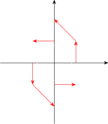

4.1 Vector Fields
Definition 4.1.1. Let \(D\) be a set in \(\mathbb {R}^2\) (a plane region). A vector field on \(\mathbb {R}^2\) is a function \(\mathbf F\) that assigns to each point \((x,y)\) in \(D\) a two-dimensional vector \(\mathbf F(x,y)\). Writing it in terms of its component functions \(P\) and \(Q\), \[\mathbf F(x,y) = P(x,y)\,\mathbf i + Q(x,y)\,\mathbf j\qquad \text {or}\qquad \mathbf F = P\,\mathbf i + Q\,\mathbf j .\] The components \(P\) and \(Q\) are real-valued functions, sometimes called scalar fields to distinguish them from vector fields.
Definition 4.1.2. Let \(E\) be a subset of \(\mathbb {R}^3\). A vector field on \(\mathbb {R}^3\) is a function \(\mathbf F\) that assigns to each point \((x,y,z)\) in \(E\) a three-dimensional vector \(\mathbf F(x,y,z) = P\,\mathbf i + Q\,\mathbf j + R\,\mathbf k\). It is continuous if and only if its component functions \(P\), \(Q\) and \(R\) are continuous.
Example 4.1.3. A vector field on \(\mathbb {R}^2\) is defined by \(\mathbf F(x,y) = -y\,\mathbf i + x\,\mathbf j\). Describe \(\mathbf F\) by sketching some of its vectors.
Solution. At a few points, \begin {gather*} \mathbf F(1,0) = \mathbf j,\quad \mathbf F(0,1) = -\mathbf i,\quad \mathbf F(-1,0) = -\mathbf j,\quad \mathbf F(0,-1) = \mathbf i,\\ \mathbf F(1,1) = -\mathbf i + \mathbf j,\quad \mathbf F(-1,-1) = \mathbf i - \mathbf j . \end {gather*} Each vector is drawn with its tail at the point.

Each arrow appears tangent to a circle centred at the origin, and this is true: the position vector \(\mathbf x = x\,\mathbf i + y\,\mathbf j\) satisfies \(\mathbf x\cdot \mathbf F = -xy + yx = 0\), so \(\mathbf F(x,y)\) is perpendicular to the radius, and \(|\mathbf F(x,y)| = \sqrt {x^2 + y^2}\) is the radius. The field describes a counter-clockwise rotation about the origin, faster further out.
Example 4.1.4. Imagine a fluid flowing steadily along a pipe, and let \(\mathbf V(x,y,z)\) be the velocity vector at the point \((x,y,z)\). Then \(\mathbf V\) assigns a vector to each point of a domain \(E\), the interior of the pipe, so it is a vector field on \(\mathbb {R}^3\), a velocity field. The field of Example 4.1.3 is the velocity field of a wheel rotating counter-clockwise with angular speed \(1\).
Example 4.1.5. By Newton’s law of gravitation, a mass \(M\) at the origin attracts a mass \(m\) at \(\mathbf x = \langle x,y,z\rangle \) with the force \[\mathbf F(\mathbf x) = -\frac {mMG}{|\mathbf x|^3}\,\mathbf x .\] Describe this gravitational field.
Solution. The vector \(\mathbf F(\mathbf x)\) points from \(\mathbf x\) towards the origin, since it is a negative multiple of \(\mathbf x\), and its magnitude is \(\frac {mMG}{|\mathbf x|^2}\): the inverse square law. All the arrows point inwards and shrink rapidly with distance. The electric field of a point charge has the same form.
Questions on this section
Stuck on something here? Ask below and it stays attached to this topic.